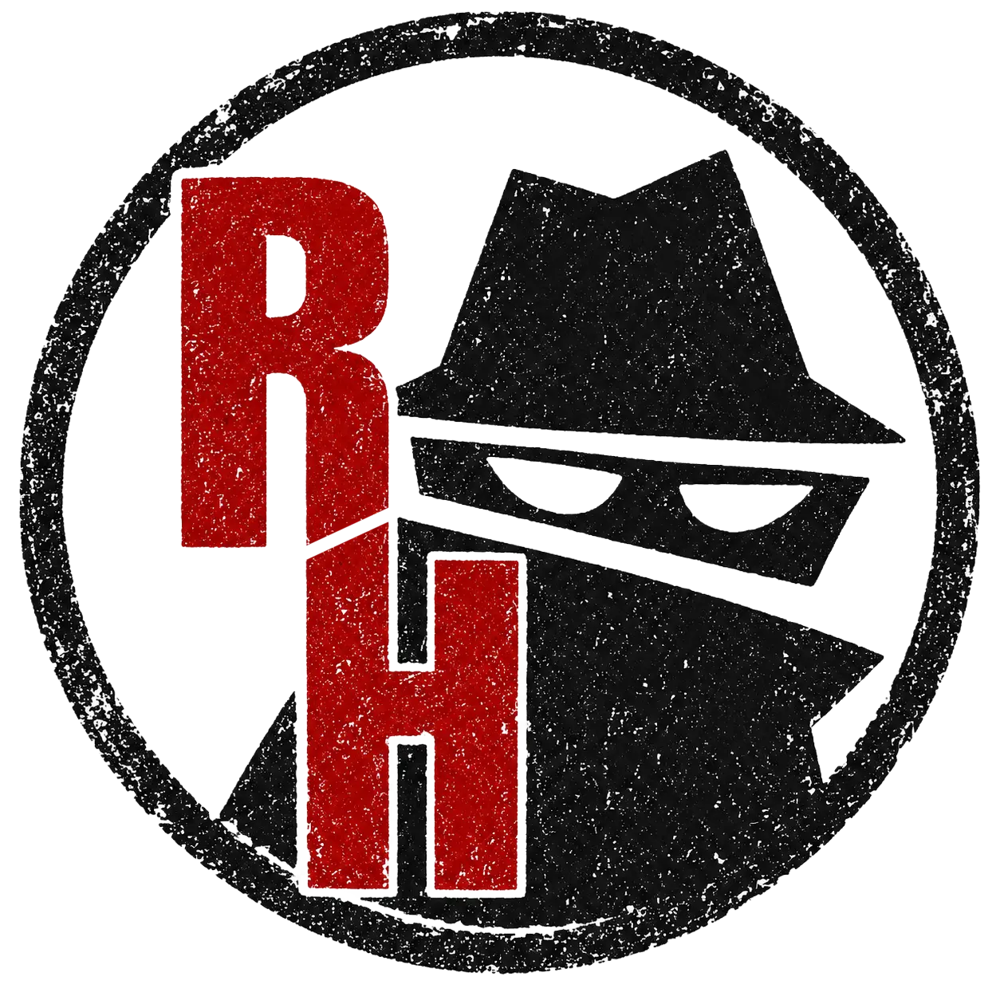
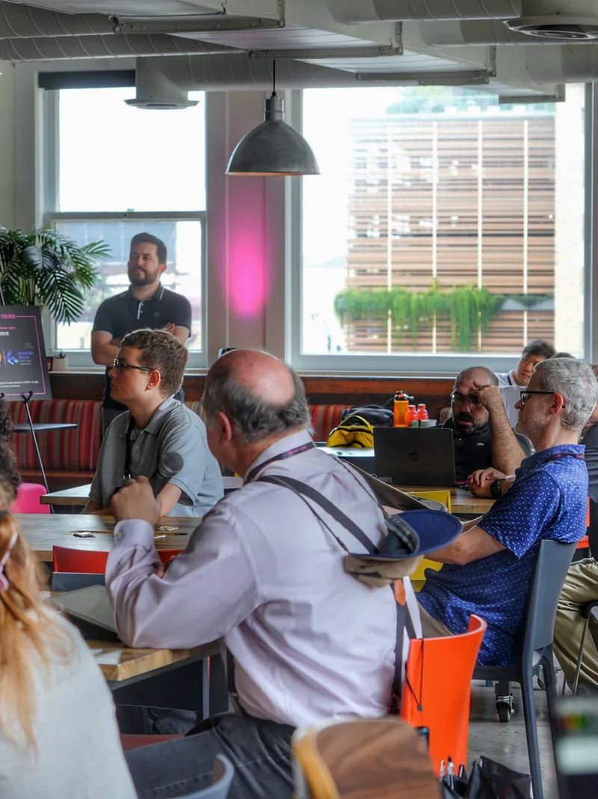

San Antonio
Has never lacked people who build things. What it lacks is anything that connects them.

Spotlight 01
Geeks && {...}


Spotlight 02
ACM San Antonio & Greater Gaming Society

Spotlight 03
ACM UTSA
Two rooms, run by students.


Spotlight 03 · Room one
RowdyHacks XII
October 3, 2026
UTSA’s annual hackathon, hosted by the Association for Computing Machinery at UTSA.
UTSA San Pedro 1, downtown

Spotlight 04
Geekdom


September 28 → October 2, 2026
Five days at Geekdom. DEVSA brought the tech track.